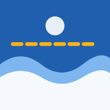

Marin King Tide Outlook
Live tides and flood outlook for low-lying streets in Corte Madera, Larkspur, Mill Valley, east San Rafael and Sausalito. How it works

Add King Tides to your home screen
Daily high tide forecast
The highest tide each day at the San Francisco gauge: NOAA's prediction, and the forecast with the sea-level anomaly and forecast weather added. Weather uses the 16-day pressure and wind forecast; after that, average weather is assumed. The shaded band is ±0.25 ft. The bars below show the National Weather Service rain forecast for the 6 hours around each high tide (about the next 7 days); a raindrop marks high tides where rain could back up drains.
Show as table
Past high tides
The highest water each day at the San Francisco gauge over the last 30 days: what NOAA's tide tables predicted, and what actually happened. Dot color is the worst flood level it reached at the locations above. Flags mark days with resident or city reports. Tap a day for details.
Show as table
Check your street
Covers 254 low-lying streets in Corte Madera, Larkspur, Greenbrae, east San Rafael (Canal, Bahia, Spinnaker Point, Peacock Gap), the Miller Ave / Tam Junction / Redwood Hwy area of Mill Valley, and Gate 5, Gate 6, Harbor Dr and Pohono St in Sausalito. Pick a street to see its flood lines and the next tides that reach them.
Next flood tides by location
The highest tide each day, with the local high time. Storm surge is not included, so a storm on any of these days adds more water.
14-day outlook
Each cell is that day's highest tide at the San Francisco gauge with the current anomaly added. The color is the flood level at that location. Hover or tap a cell for details. Beyond about two weeks, treat it as a rough guide: the anomaly can grow or fade.
Kelvin wave watch: anomaly along the coast
Daily average of the measured water level minus the predicted tide over the last three weeks. Slow buildups tend to show up in San Diego first and reach San Francisco about three days later. Storm spikes don't follow that pattern.
Show as table
How this works, and its limits
The outlook adds this fall's El Niño sea-level bump (the Kelvin wave) and the current weather to NOAA's tide predictions, then checks the result against each street's flood lines, which come from lidar and, where available, resident photos.
- Tide: NOAA's hourly predictions for the San Francisco gauge (9414290), in feet above mean lower low water. All thresholds use that same scale.
- Wind waves: on the San Pablo Bay shore (Point San Pedro Rd and Peacock Gap), we flag high tides with southeast-to-south wind gusts of 30 mph or more and a tide of 6.5 ft or more ("waves could splash over the wall"), and gusts of 38 mph or more with a tide of 7.0 ft or more ("waves could flood the road"). Those lines come from two events: Nov 18, 2026 (about 6.6 ft, gusts over 30 mph, waves over the wall near Riviera Dr) and Jan 22, 1997 (about 7.0 ft, gusts near 40 mph, Peacock Dr at Point San Pedro Rd flooded). Wind is from the Open-Meteo forecast for the bay off Point San Pedro; first estimates.
- Rain: National Weather Service 6-hour rain forecast for the Corte Madera shoreline, and live flow on Corte Madera Creek at Ross (USGS 11460000). We flag a high tide when about a quarter inch of rain is forecast within 3 hours of a tide over 6.0 ft, and call it high risk at half an inch with a tide over 6.5 ft. Those cutoffs are estimates. We don't model storm drains, pumps or creek flooding, so treat the flag as "be alert," not a street-by-street forecast. One exception: streets that drain through the marsh or pump basins (Miller Ave, Tam Junction, the Redwood Hwy Frontage Rd, Dellwood Ct, Point San Pedro Rd at Peacock Dr and the Lucky Drive area) are forecast to flood 0.3 ft lower when half an inch of rain is expected near high tide. On Nov 18, 2026, Miller and the Frontage Rd closed at 6.9 ft in heavy rain; their dry-weather closure line is 7.2–7.3 ft. In that much rain, closed roads also stay closed longer: we show them likely closed until about 5 hours after high tide (on Nov 18, 2026, Miller Ave, Creekside Dr and Seawolf Passage reopened 4.5 to 5 hours after the high). The 0.3 ft and the 5 hours are first estimates from one storm, and drainage gets worse as the ground saturates and creeks rise over a wet winter.
- Anomaly: measured minus predicted water level at San Francisco, averaged over the hour either side of the last two high tides (or the last 25 hours if that's unavailable). The current weather effect is subtracted out, and what's left (mostly the slow Kelvin wave buildup) is carried forward unchanged.
- Street lookup: flood lines for 250 streets come from a flood-connectivity model on 2018 USGS 1-meter lidar with SFEI Bay Shore Inventory barriers and tide gates treated as closed, run at 5 cm water-level steps. Eight streets are calibrated from resident reports. Mill Valley (Tam Junction, Miller Ave, Almonte) uses Marin County's 6.2 ft onset for the Manzanita interchange, lidar road heights converted from Richardson Bay, and Miller closures on Oct 28 and Nov 9–13, 2026 (SF peaks 7.2–7.9 ft), with high tide about 25 minutes after SF; the rest are model estimates (about ±0.5 ft). "Behind levees / pumps" means the street is below ordinary high tides and stays dry only because of infrastructure.
- Thresholds: each street's flood lines come from a 1-meter lidar flood model, SFEI's Bay shoreline data, resident photos (Jan 1–3, 2026 and Oct 27–29, 2026) and the WET app's flood lines. They are estimates. Pump stations, storm drains and rain all shift them.
- Weather: low pressure and southerly winds raise the Bay; high pressure and northerly or westerly winds lower it. Fit on 10 years of NOAA Richmond data: about −1.04 cm per millibar (the classic inverse-barometer effect) and, for a steady 10 m/s (22 mph) wind, about +17 cm (6.6 in) from the southeast or −17 cm from the northwest. It explains roughly half of a typical storm surge. Weather forecasts come from Open-Meteo for the Golden Gate area, and the current weather effect is removed from today's anomaly so it isn't counted twice. Weather forecasts lose skill after about 5 days, so the weather effect fades to zero by day 10. When the weather adds 0.3 ft or more, the outlook also shows how high it could go if the surge is twice what the weather fit predicts (the fit explains about half of a typical surge): a dashed orange whisker on the chart and "Possible" flags. The same range appears, at least 0.6 ft above the forecast, when a quarter inch or more of rain is forecast near high tide with a southerly wind: the storms of Nov 13 and Nov 18, 2026 ran 0.5 to 0.8 ft above what the weather fit predicted. Storm surge in today's anomaly also fades (over about 3 days) toward the 14-day average at SF, which is the slow Kelvin-wave and seasonal part.
- Not included: rain, waves, river flow, and local effects inside San Rafael Bay and Corte Madera Creek beyond what the Richmond gauge sees. During a storm, check the NWS Bay Area coastal flood advisories.
- This is a community project, not an official warning. Don't drive through floodwater.